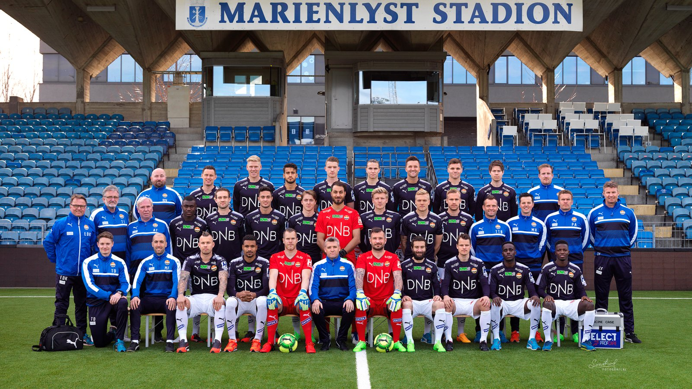

Spillere

Klubben har et vidt spekter med spillere, fra mange forskjellige land, vi har god lagmoral og er villige til å krige for klubben. Godset spillerne spiller for mer enn å vinne, de spiller for fansen, klubben og byen Drammen. les mer om troppen her.